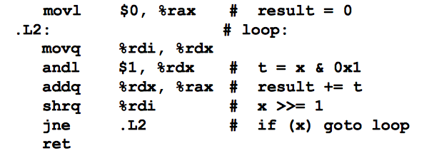
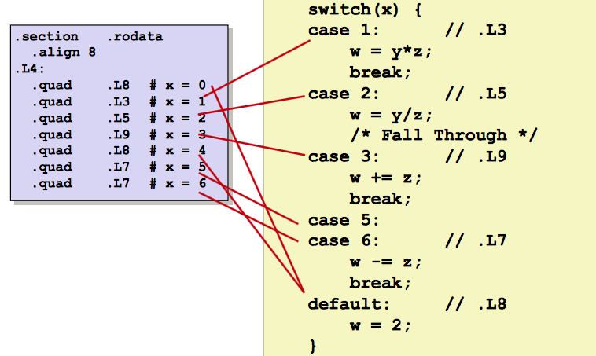

Machine-Level Representation of Programs
Level 3
This page details the implementation of loops in assembly: Do-while, while and For loops each can be represented in machine level using the instructions covered in the previous section. An expansion on jumps, switch statements involve jumping between several conditions.
Do-While Loops
The general do-while conversion executes the Body of the code, then checks the condition at the While(Test) statement after. The Goto version of do-while loops indicates a "loop" section, exectures body, checks if(Test), then conditionally jumps back to "loop."
While Loops
One formula for a while loop is the "jump-to-middle" translation. it tests While(Test) then executes the body. In terms of Goto, the code jumps to "test" which if(Test) jumps to "loop" which either exits or it executes the body, then returns back at "test" again.
Another general formula converts the while loop to a do-while loop, then to a goto version. The code first tests if(!Test) and either exits or executes the "do", which completes the body until While(Test) is done.
For Loops
For Loops are of the form for(Init; Test; Update), and completes the body a set number of iterations. For loops are converted into while loops where the Init is set beforehand, while(Test) is checked, then the Body and Update execute for the proper number of iterations.
Switch Statements
Switches can include multiple case labels, where one is left blank so it skips to the following case(5 & 6), where casses fall through without a break (2), or where cases are entirely missing (4).
Table Structure: Each target requires 8 bytes – Base address at .L4
Jumping can be direct (jmp .L8) or indirect (jmp *.L4(,%rdi, 8)). The indirect jump starts the table at .L4 as is convention, then scales by factor of 8-byte address size
